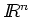
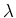
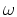
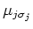
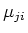

Next: About this document ...
MATP6640/DSES6770 Linear Programming, Homework 3.
Due: Thursday, February 19, 2004.
The attached sheet is part of a paper which was submitted to
Mathematical Programming. The authors propose an algorithm for linear
programming and then make some claims about the performance of this
algorithm. Do these claims seem reasonable? Justify your answer.
Notes:
- The vector x is in .
- ``Step 1'' of the algorithm should also include the determination
of 
described in ``Step 0''.
- The expression for c in ``Step 2'' is designed to find ,
it does not change c.
The coefficient

in the same line should read .
- The claims for the amount of work per iteration are reasonable, since
Gaussian elimination requires O(n3L) work. (Here, L denotes the
storage requirement for any entry in the data.)
It is the claims regarding the number of iterations
that I want you to examine carefully.
| John Mitchell |
| Amos Eaton 325 |
| x6915. |
| mitchj@rpi.edu |
| Office hours: Tuesday Feb 17: 2 - 4pm. |
John E. Mitchell
2004-02-18